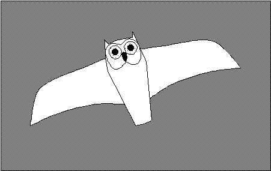
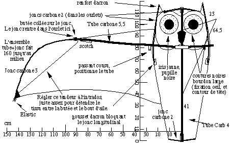

Je voulais faire un oiseau pour le vol de nuit, cela manquait à ma collection. La couleur blanche s'imposait, de là le Harfang, ce hibou blanc du grand Nord (personnage marquant aussi des "Indes Noires" de Jules Verne). Il a un bon look, bien visible la nuit, mais aussi le jour si le ciel n'est pas blanc, par exemple bleu profond, ou noir orageux :

Pour des photos, voir la présentation : Le Harfang
Comme le vol de nuit se passe souvent avec un vent assez faible, j'ai voulu faire assez léger, et comme la nature aime les courbes plutôt que les angles, le jonc de carbone 3, s'emboîtant dans du tube carbone 5,5 est parfait. Il faut seulement bien "fretter" le tube avec plusieurs tours de ruban adhésif bien serré à l'endroit de l'emboîtement pour ne pas qu'il éclate. Ceci dit, mon Harfang a déjà volé par force 3 à 4.
Le jonc de 3 est courbé par un fil tendeur à l'intrados, qui évite que le spi du bout d'aile soit bandé par le jonc qui veut se redresser, ce qui rend le Harfang instable. Ce tendeur doit être juste assez... tendu pour supprimer le pli qui se forme entre la butée d'encastrement du jonc dans le tube et la pointe de l'aile, ceci constituant un indicateur bien net du réglage à mettre. Le tendeur est attaché au renfort dacron du bout d'aile. Ce dacron est accroché par un elastic, pour tendre l'aile lors du montage, à une pointe de flêche de 3 ou à un bricolo équivalent (évitez la durit qui, à ce diamètre, se replie et se coupe). Si vous voulez démonter, il faut décrocher le bout d'aile (ce qui détend le fil) puis enlever les emboîtements des ailes, de la tête et de la queue (sauf si vous avez un sac de 3 m de long et 1,20 m de large et le camion pour le mettre, auquel cas les manipulations sont très simplifiées...).
Pour la tête, 2 joncs de 2 bloqués entre les pointes des oreilles et à mi-corps dans les ourlets maintiennent la forme. Un jonc de 2 horizontal en tête supporte la poussée du tube de corps. Il n'a pas besoin de faire toute la largeur, ce qui facilite le repliage sans démontage des joncs. Cela permet aussi de tricher pour rétablir un vol symétrique en déplaçant le jonc un peu à gauche ou à droite.
Un fil tendu entre les tubes de 5,5 des ailes crée un dièdre d'environ 10 cm de flêche au centre. On relie les 2 moitiés du fil lors du montage par un mousqueton, ou un système de boucle-et-bâton qui se boutonne (plus pratique, je trouve). La présence de ce tendeur crée aussi une courbure longitudinale favorable.
La bride est composée de 2 brins attachés à la colonne vertébrale du bestiau, au niveau du haut du bec et des pattes (repliées sous les plumes blanches chez moi, mais vous pouvez toujours en imaginer, voire en faire...).

Le Harfang supporte une forte incidence, mais il nage alors un violent crawl dès que le vent forcit un tant soit peu. Lui le supporte sans casser (peut-être pas indéfiniment...) mais pas moi : un battement des ailes ne me déplairait pas, mais des deux simultanément, et pas alternativement : un oiseau crawleur n'est pas très courant dans la nature... Je n'ai pas de remède simple à ça, sinon voler assez plat et avec peu de dièdre pour que le balancement latéral ait un amortissement suffisant.
Si le vent est faible, ne mettez pas une ligne trop lourde : j'utilise toujours du fil à coudre les voiles de bateau (Vieux Campeur Marine) qui n'a que 2 inconvénients :
il scie ou brûle les doigts quand on le laisse filer et je me suis fait un petit doigtier en cuir, qui protège mieux que le durillon que je m'étais fait avant ;
le fil n'est pas très visible et il faut bien surveiller pour ne pas se le faire couper, ou pour rattraper le coup, après... Cela m'a déjà coûté un cerf-volant et maintes courses sur les plages ou escalades dans les arbres, mais après tout, mettre un cerf-volant en l'air pour la journée et le surveiller à l'ombre de la tente de la buvette, ça n'est pas follement excitant...
Il ne me reste qu'à vous souhaiter une nuit chaude, étoilée, avec un bon zéphir... mais vous pourrez aussi voler de jour !
Maxime ROUSSELLE
Compléments 2004 :
1) Au lieu de courber tout l'arc par un fil pour créer le dièdre, j'ai mis au centre un raccord alu un peu courbé. Cela crée au centre une arête qui freine les mouvements d'oscillation transversaux, et le Harfang "crawle" moins. J'ai aussi mis un petit plomb arrière, ce qui diminue le passage sur la tête en haut de fenêtre.
2) Pour faire de l'indoor avec, j'ai d'abord allégé le total en remplaçant l'armature par du tube de 4 au centre et du jonc de 2 en bout d'aile. J'ai aussi placé le plomb arrière... à l'avant et supprimé la cambrure longitudinale pour que le CV puisse planer vers l'avant et dérouler du fil sans se cabrer tout de suite.